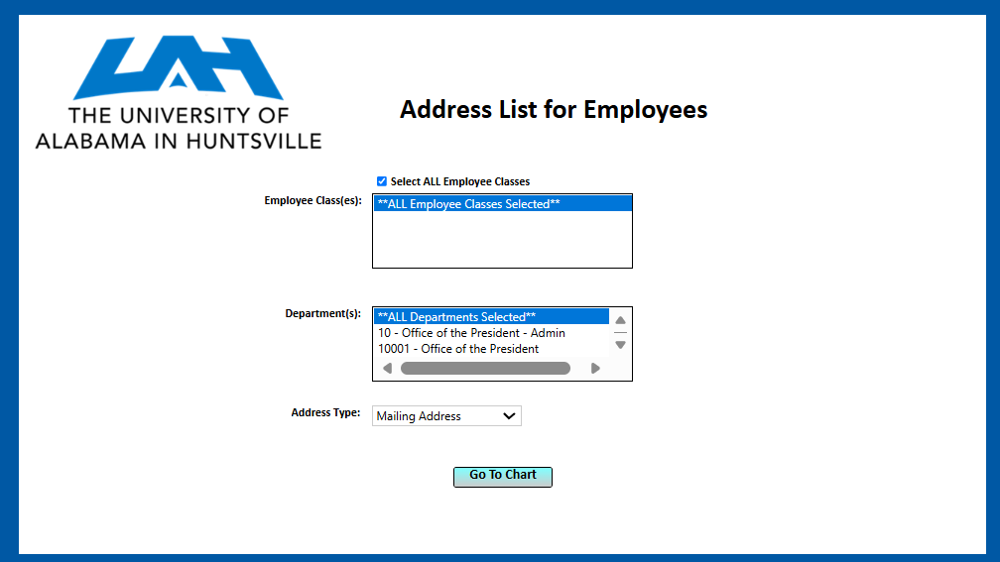
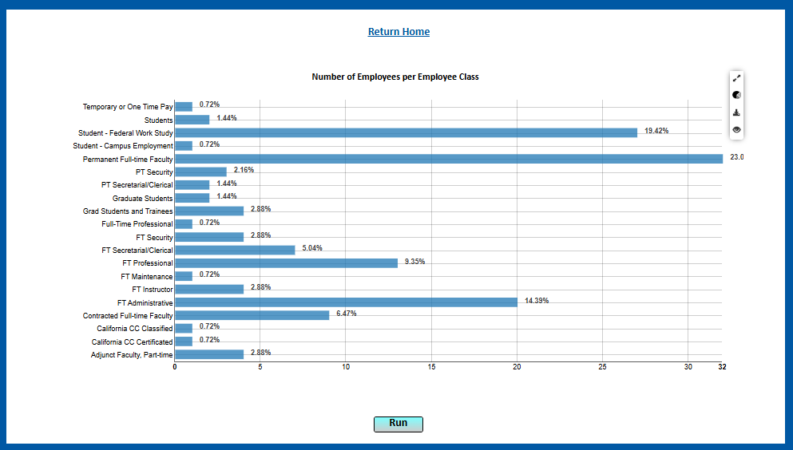
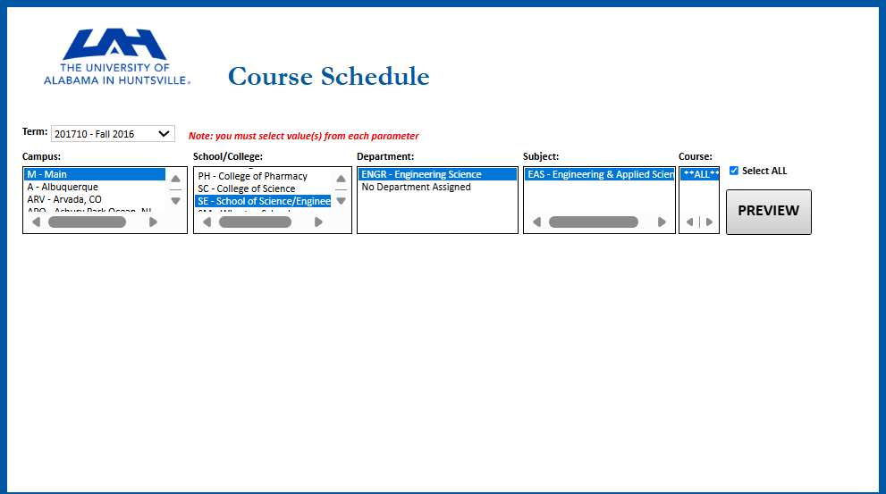
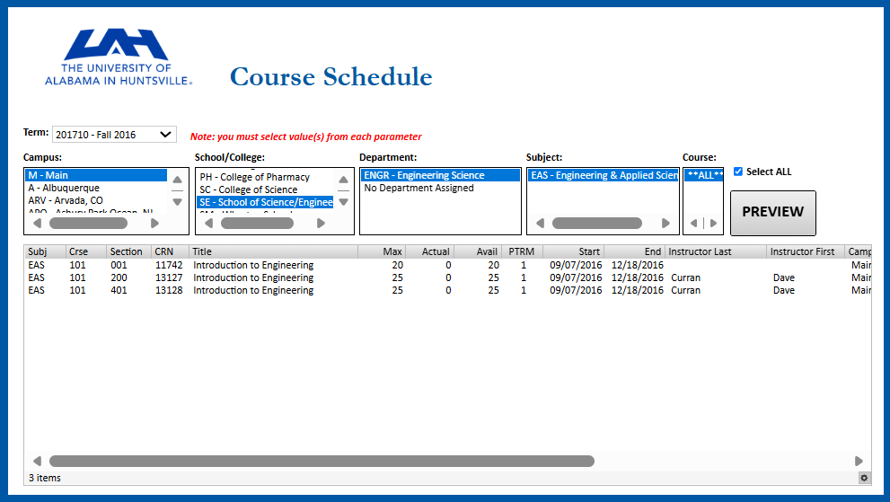
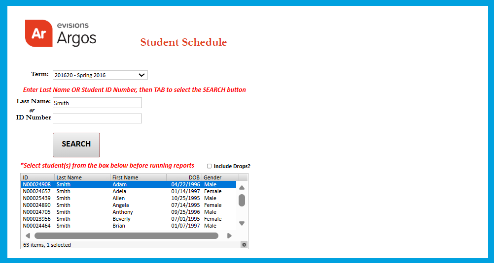

Week 3 · Professional Services
Professional Services, Partnerships, and Argos Training
01Summary
Spent the week with Professional Services and Partnerships: the team that trains, consults, and implements for clients, and the team that vets outside partnerships for product fit and revenue potential.
02What I Worked On
- Argos workshopWent hands-on in Argos: building data blocks, dashboard objects, banded reports, and reusable templates to standardize branding across future reports.
- Partnership structuresStudied the line between training a client to use a tool versus building their specific deliverable for them, and compared reseller vs. technology partnership structures.
03Screenshots
The screenshots below use Argos’ fictional training data. See the help icon in the top navigation for details.





04Reflection
The Argos workshop was the highlight of the whole internship. It was the first time the product I had heard about all summer actually clicked, because I was finally the one writing the SQL behind it. Higher-ed clients also adopt new tools more slowly than most industries, which changes how you introduce anything new to this market.
05Skills
- Argos Training
- SQL & DataBlocks
- Partnership Structures
- Client Training
- Report Templating